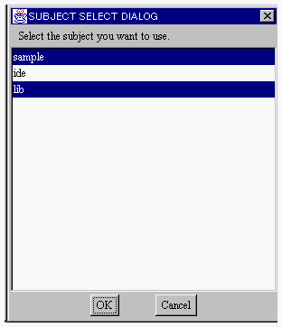
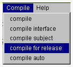
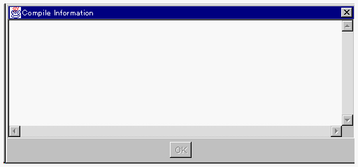

リリース用コンパイル
プロジェクトマネージャでサブジェクトのリリース用コンパイルを行うことができます。コンパイルに必要なスクール情報はスクールブラウザから獲得します。リリース用コンパイルを行ったサブジェクトはカタログサーバに登録することができます。

- <リリース用コンパイルを行うための事前条件>
- リリース用コンパイルを行う前に以下の作業が行われている必要があります。
- 対象サブジェクトの全クラスを格納しているソースファイルがプロジェクトディレクトリに格納されている。
- そのソースファイルに含まれる全クラスをサブジェクトに登録し、インタフェース識別子と動作部識別子を付与している。
- ソースファイルのコンパイルのために必要なサブジェクトを選択している。
- スクールブラウザのカレントサブジェクトがコンパイル対象サブジェクトになっている。
- スクールブラウザのラジオボタンが「for Release」にセットされている。
1つのプロジェクトに対してさまざまなコンパイルを行うことができますが、3．のサブジェクト選択処理は1度行えば毎回行う必要はありません。
別のプロジェクトで処理を行う場合には、サブジェクトを選択し直してください。
- <サブジェクトの選択>
- １．スクールブラウザのSchoolメニューから select subjects... を選択します。

２．コンパイルのために必要なサブジェクトを選択します。

複数のサブジェクトを選択することができます。開発クラスが利用しているすべてのサブジェクトを選択してください。
すべてのサブジェクトを選択したら、OKボタンをクリックしてください。（OKボタンクリック後、ダイアログが消去されるまでに時間がかかります。）
- <OZソースファイルのリリース用コンパイル>
- １．プロジェクトマネージャの Compile メニューから compile for release
メニュー項目を選択します。

- コンパイル情報を表示するウィンドウが表示されます。

- リリース用コンパイルでは、コンパイルが成功したかどうかのメッセージだけが返されます。
|
MyDialog.oz compiled successfully."
Quit.oz compiled successfully."
Test.oz compiled successfully." |
(すべて成功した場合の例) |
コンパイルが終了すると、OKボタンがアクティブになります。 このボタンをクリックするまで、コンパイル情報を表示するウィンドウは表示されています。
(コンパイル結果はOZ IDEのGOD下のtmpディレクトリに格納されています。)
(c) 1996-1998 IPA, ETL, AT21, FSIABC, FXIS,
InArc, MRI, NUL, SBC, Sharp, TEC, TIS. All rights reserved.